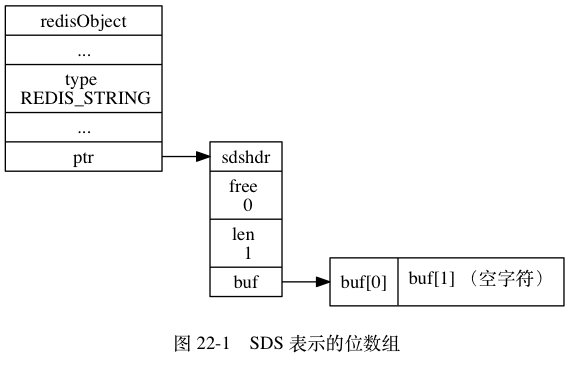
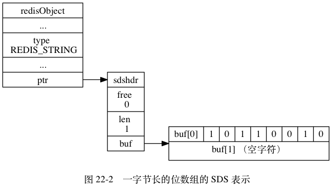

位数组的表示¶
Redis 使用字符串对象来表示位数组， 因为字符串对象使用的 SDS 数据结构是二进制安全的， 所以程序可以直接使用 SDS 结构来保存位数组， 并使用 SDS 结构的操作函数来处理位数组。
图 22-1 展示了用 SDS 表示的， 一字节长的位数组：
redisObject.type的值为REDIS_STRING， 表示这是一个字符串对象。sdshdr.len的值为1， 表示这个 SDS 保存了一个一字节长的位数组。buf数组中的buf[0]字节保存了一字节长的位数组。buf数组中的buf[1]字节保存了 SDS 程序自动追加到值的末尾的空字符'\0'。

因为本章介绍的操作涉及到二进制位，
为了清晰地展示各个位的值，
本章会对 SDS 中 buf 数组的展示方式进行一些修改，
让各个字节的各个位都可以清楚地展现出来。
比如说，
本章会将前面图 22-1 展示的 SDS 值改成图 22-2 所示的样子。

现在，
buf 数组的每个字节都用一行来表示，
每行的第一个格子 buf[i] 表示这是 buf 数组的哪个字节，
而 buf[i] 之后的八个格子则分别代表这一字节中的八个位。
需要注意的是，
buf 数组保存位数组的顺序和我们平时书写位数组的顺序是完全相反的：
比如说，
在图 22-2 的 buf[0] 字节中，
各个位的值分别是 1 、 0 、 1 、 1 、 0 、 0 、 1 、 0 ，
这表示 buf[0] 字节保存的位数组为 0100 1101 。
使用逆序来保存位数组可以简化 SETBIT 命令的实现，
详细的情况稍后在介绍 SETBIT 命令的实现原理时会说到。
图 22-3 展示了另一个位数组示例：
sdshdr.len属性的值为3， 表示这个 SDS 保存了一个三字节长的位数组。- 位数组由
buf数组中的buf[0]、buf[1]、buf[2]三个字节保存， 和之前说明的一样，buf数组使用逆序来保存位数组： 位数组1111 0000 1100 0011 1010 0101在buf数组中会被保存为1010 0101 1100 0011 0000 1111。
![digraph {
label = "\n 图 22-3 三字节长的位数组的 SDS 表示";
rankdir = LR;
//
node [shape = record];
redisObject [label = " redisObject | ... | type \n REDIS_STRING | ... | <ptr> ptr "];
sds [label = " <head> sdshdr | free \n 0 | len \n 3 | <buf> buf "];
buf [label = " { buf[0] | 1 | 0 | 1 | 0 | 0 | 1 | 0 | 1 } | { buf[1] | 1 | 1 | 0 | 0 | 0 | 0 | 1 | 1 } | { buf[2] | 0 | 0 | 0 | 0 | 1 | 1 | 1 | 1 } | { buf[3] （空字符） } "];
//
redisObject:ptr -> sds:head;
sds:buf -> buf;
}](../../_images/graphviz-52abb89ca49de2c84c04416ade157616077e0626.png)